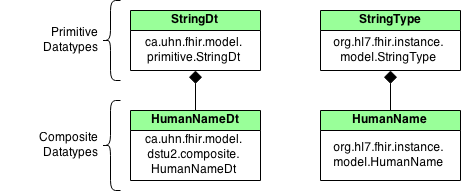

Upgrading to HAPI 1.1
Since the early days of FHIR, HL7.org has provided an open source "Java Reference Implementation", which is an implementation of a FHIR data model, parser, and client in Java.
HAPI was originally started as a separate Java implementation of FHIR, with a fairly different focus: implementing servers with an easily extendible data model. Over time though, the two Java implementations have shown a fair bit of overlap, so at the 2014 DevDays we decided to try and harmonize the two libraries.
HAPI FHIR 1.1 begins the availability of a harmonized library. Note that this version has not yet been formally released, but is currently available in "snapshot" development builds.
For HAPI FHIR users: This integration will bring the ability to use powerful features from the RI in your applications, such as the resource validator and the narrative generator.
For RI users: This integration will bring the ability to use HAPI's client and server frameworks in your application, as well as the ability to take advantage of HAPI's code-first statically bound extension mechanism.
The RI Data Model
At this point, the RI integration consists of a new parallel set of classes representing the FHIR data model. For example, in addition to the Patient classes representing HAPI's DSTU1 and DSTU2 models there is now a new Patient class representing the RI structure (which is also a DSTU2 structure).
The reference implementation (RI) structures have been added as a new maven dependency library called hapi-fhir-structures-hl7org-dstu2. See the download page for information on the Maven dependencies for this version of the structures.
A new interface has been added which serves as a master interface for all resource classes: org.hl7.fhir.instance.model.api.IBaseResource. All RI resource classes will be in the package org.hl7.fhir.instance.model, as shown below.

Datatypes will also be found inthe same package. Unlike HAPI datatype structures, which all end with "Dt", the RI primitive structure names end with "Type" and the RI composite structures have no suffix, as shown below.
Using the RI Structures in Your Application
If you want to use the RI structures in your application, you will need to use the "hapi-fhir-structures-hl7org-dstu2-[version].jar" library.
Using these structures is then similar to using other structures.
// Create a context for DSTU3
FhirContext ctx = FhirContext.forDstu3();
// Working with RI structures is similar to how it works with the HAPI structures
org.hl7.fhir.dstu3.model.Patient patient = new org.hl7.fhir.dstu3.model.Patient();
patient.addName().addGiven("John").setFamily("Smith");
patient.getBirthDateElement().setValueAsString("1998-02-22");
// Parsing and encoding works the same way too
String encoded = ctx.newJsonParser().encodeResourceToString(patient);
Upgrading Existing Applications to HAPI FHIR 1.1
If you have an existing application built using a version of previous version of HAPI FHIR, there is one change that may affect you. As shown above, a new interface called IBaseResource has been introduced, and the IResource interface extends from it. Many methods in the API which previously returned IResource now return IBaseResource.
For these methods, you may cast the IBaseResource to IResource.